작품 02 / 제품디자인 · 사용자 경험 디자인
외출 전의 마지막 확인,
스마트 도어락.
도어락에 준비물 체크리스트를 결합하여, 문을 나서는 순간 자연스럽게 소지품을 확인하도록 제안한 제품디자인 프로젝트입니다. 초기 형태 구상부터 UI 개선, 설계 검토, 최종 전시 판넬까지 실제 발전 과정을 기록했습니다.
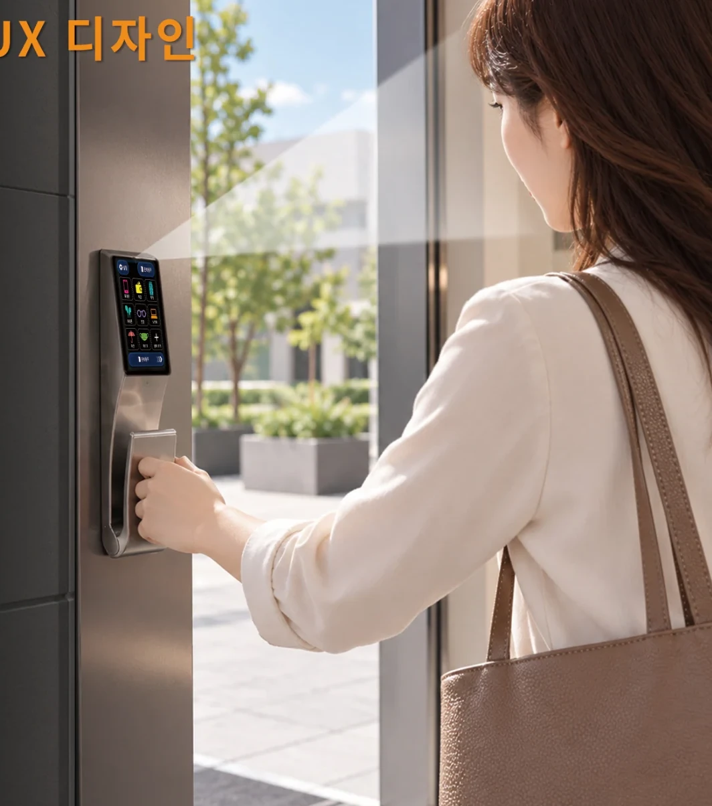
문을 나선 뒤에야
생각나는 준비물.
휴대전화, 지갑, 차 키처럼 매일 사용하는 물건을 놓고 외출하는 상황에서 출발했습니다. 별도의 알림 앱을 실행하지 않아도, 사용자가 매일 마주하는 출입문에서 준비물을 확인할 수 있도록 기능과 형태를 함께 구상했습니다.
형태를 탐색하고
손잡이의 비례를 조정하다.
초기 렌더링과 스케치에서는 상단 디스플레이, 꺾이는 몸체, 곡면형 푸시풀 손잡이의 결합을 검토했습니다. 초기안의 형태적 특징을 각각 다른 시점에서 비교할 수 있도록 구성했습니다.
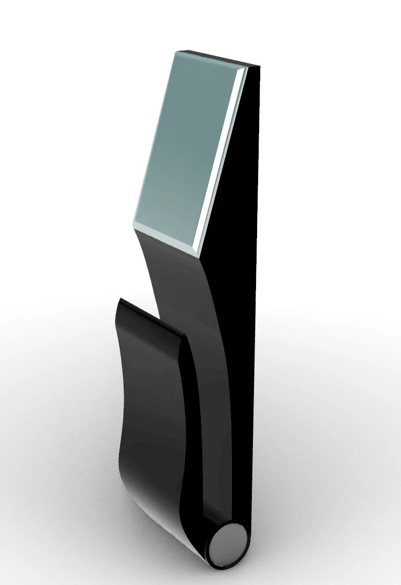
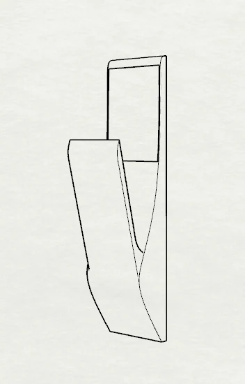
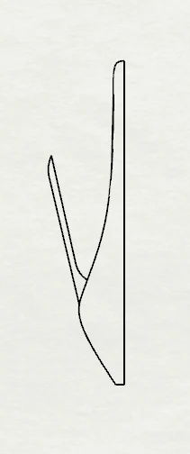
한눈에 알아보는
준비물 인터페이스.
초기 화면은 큰 아이콘과 선명한 색상을 이용해 준비물의 종류를 빠르게 인식하도록 구성했습니다. 6개 항목을 강조한 초기안과 더 많은 항목을 담는 화면을 비교하며 정보 밀도와 시인성을 검토했습니다.
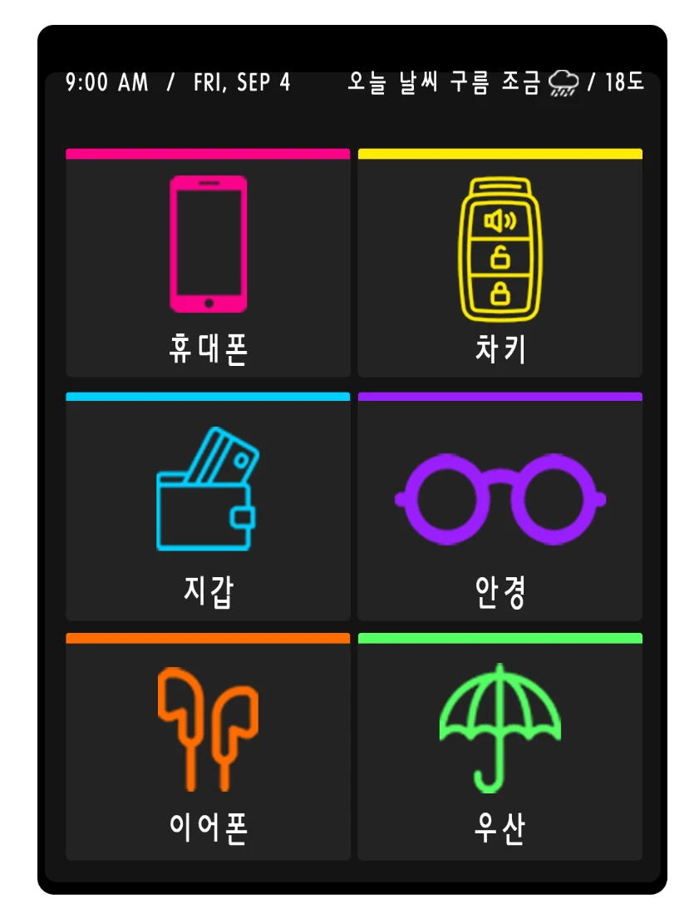
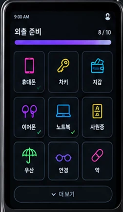
제품과 화면을
하나의 경험으로 발전시키다.
전시용 최종 판넬에 이르기 전, 문제 정의와 제품 기능을 설명하는 방식, 외형 렌더링의 배치, 화면 조작 흐름을 반복적으로 수정했습니다. 아래 세 판넬은 최종 결과가 아닌 중간 발전 과정입니다.
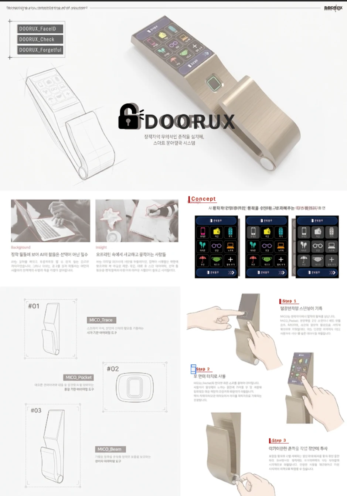
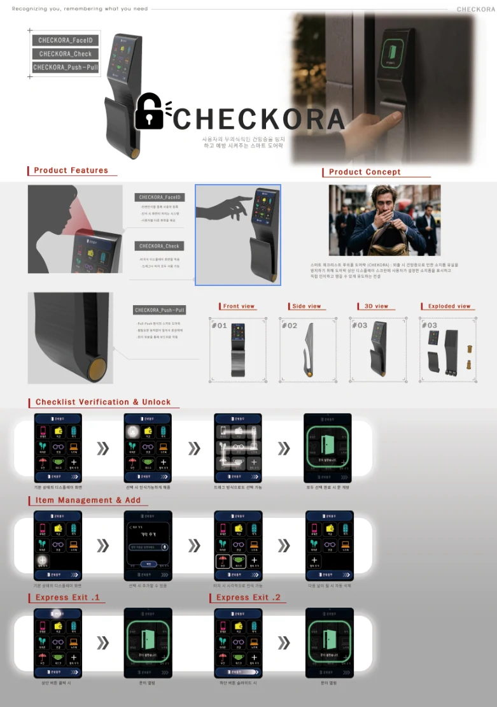
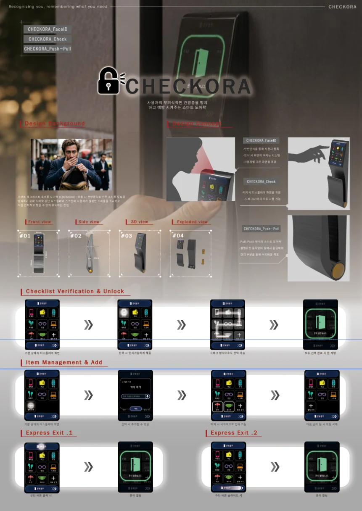
준비물 확인부터
출입 동작까지.
최종 UI는 3×3 배열에 휴대전화·지갑·차 키 등 준비물과 추가 항목을 배치하고, 상단의 설정 및 문 열기 기능과 하단의 조작 버튼을 명확히 구분했습니다. 화면 자체를 크게 보여주어 실제 시각 체계를 확인할 수 있도록 했습니다.
그림과 한글 이름을 함께 사용해 항목을 직관적으로 확인합니다.
기본 준비물 외에 필요한 항목을 추가하는 흐름을 고려했습니다.
체크리스트 확인과 도어락 조작이 하나의 화면 안에서 이어집니다.
화면과 손잡이의
비례를 설계하다.
최종 제품의 정면·측면 치수와 조립 구성, Rhino 모델링 화면을 함께 제시합니다. 형태 구상에서 끝나지 않고 각 부품의 관계와 제작 가능성을 검토한 과정입니다.
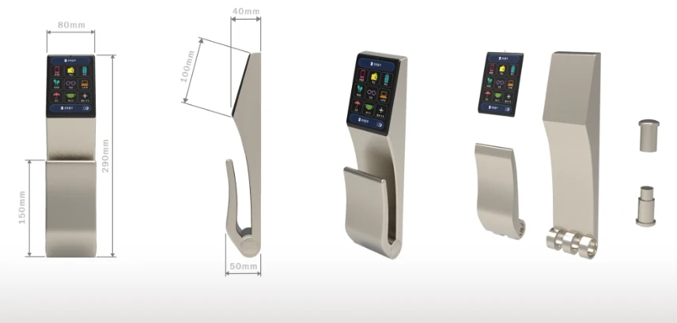
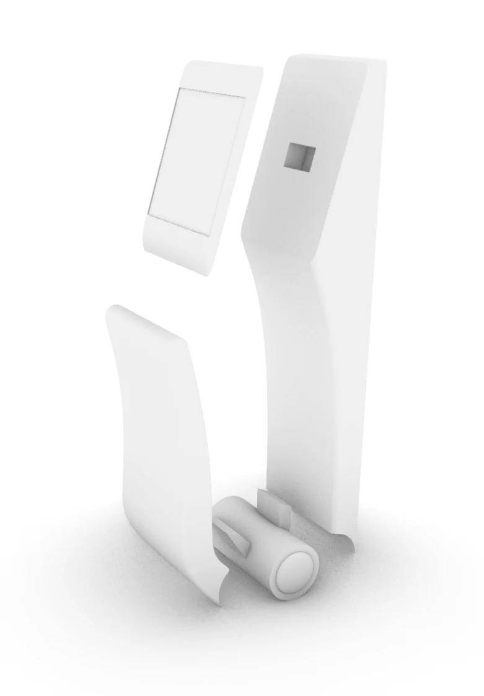
디자인의 문제부터
최종 결과까지.
최종 전시 판넬은 실제 사용 상황, 제품의 형태와 구조, UI의 단계별 흐름을 한 장에 정리합니다. 이전 판넬과 달리 최종 결과를 이 섹션에서만 크게 소개해 이미지 중복을 줄였습니다.
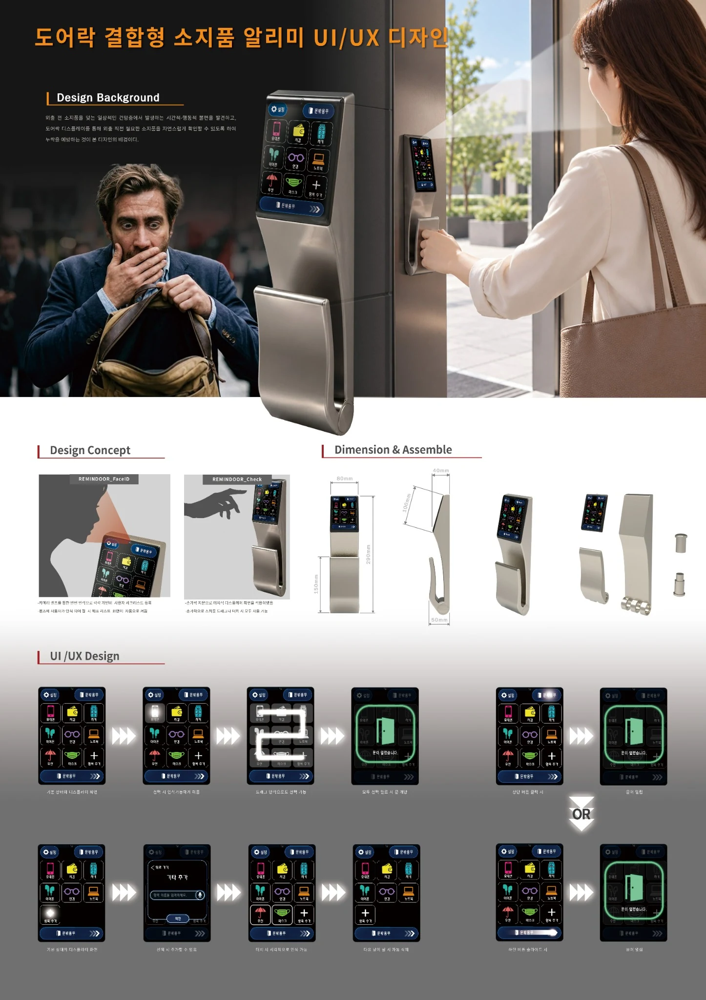
기존 포트폴리오에 사용한 메인 판넬 이미지 보기
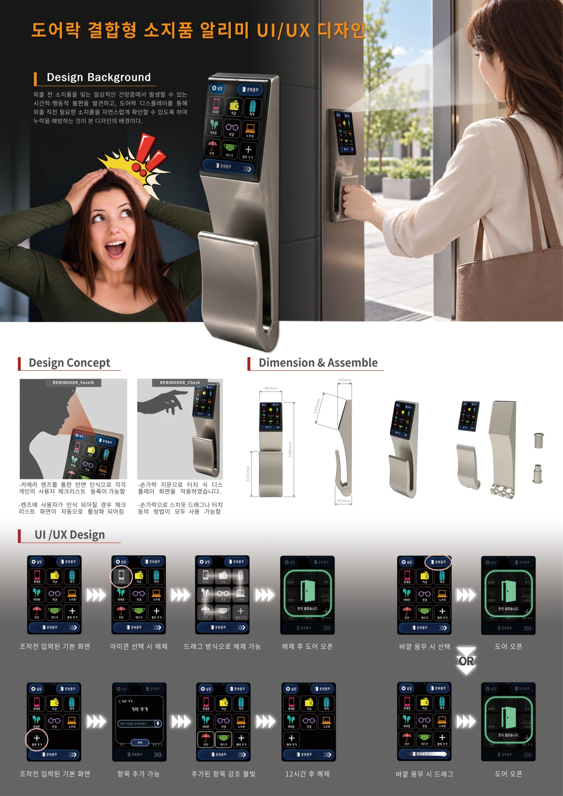